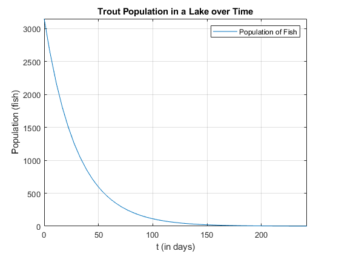

clc
clear
close all
format long g
disp('Zyad Khan - MATLAB Chapter 7 Assignment')
syms t;
population_rate_of_change= -105*exp(-t/30);
population_model = int(population_rate_of_change);
syms c
population_model_with_c = population_model + c;
initial_value = 3150 ;
t = 0;
sub_t_in_pop_model = subs(population_model_with_c, t);
const_value = solve(sub_t_in_pop_model == initial_value, c);
population_model_with_c = population_model + const_value ;
disp(["The model for the population of the fish in the lake is P(t)= " + char(population_model_with_c)]);
pop_after_11_days = subs(population_model_with_c, 11);
pop_after_11_days_approx = double(pop_after_11_days);
fprintf('The population of trout fish in the lake after 11 days is %.0f fish.\n', pop_after_11_days_approx)
days_till_pop_is_zero = solve(population_model_with_c == 0.99);
pop_zero_approx = double(days_till_pop_is_zero);
fprintf('It will take %.1f days for the entire trout population to die. \n', pop_zero_approx)
fplot(population_model_with_c, [0,pop_zero_approx]);
hold on; grid on
xlabel('t (in days)')
ylabel('Population (fish)')
title('Trout Population in a Lake over Time')
legend('Population of Fish')
disp('The graphical model for the population of fish will open in a new window shortly... ')
Zyad Khan - MATLAB Chapter 7 Assignment
The model for the population of the fish in the lake is P(t)= 3150*exp(-t/30)
The population of trout fish in the lake after 11 days is 2183 fish.
It will take 242.0 days for the entire trout population to die.
The graphical model for the population of fish will open in a new window shortly...
